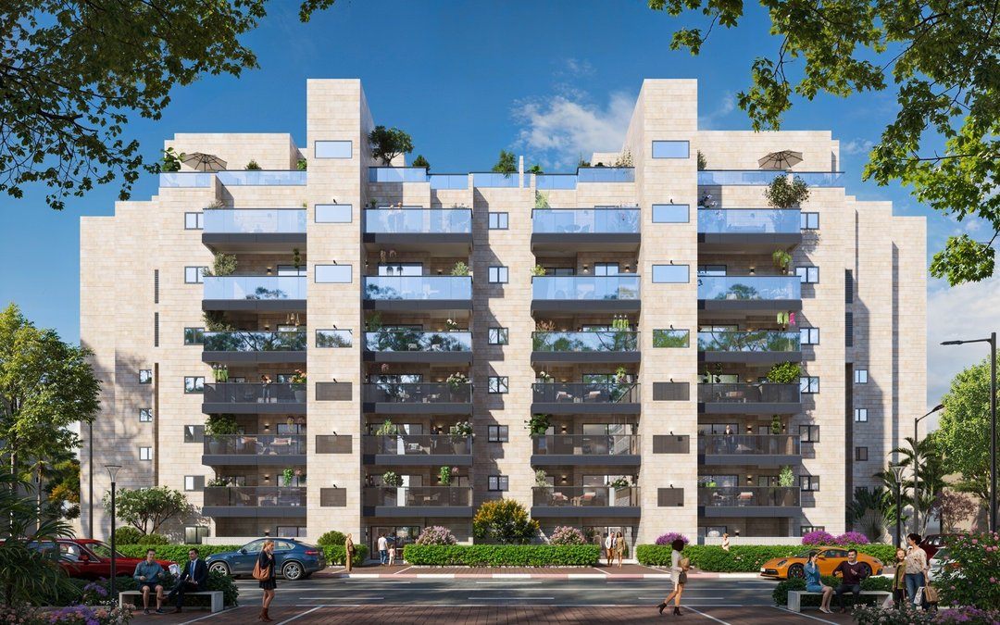
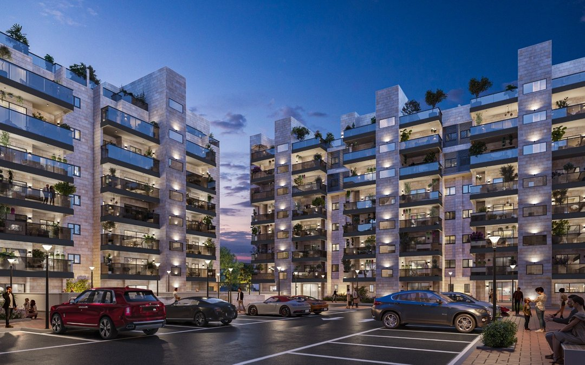

בשיווק · שלב א' בביצוע
קרן היסוד · מתחם הצעירים.
התחדשות עירונית לזוגות צעירים בלב אשדוד — דירות 3–4 חדרים ודירות גג, במרחק הליכה מפארק אשדוד-ים ומחופי העיר.
התחדשות עירונית לזוגות צעירים בלב אשדוד — דירות 3–4 חדרים ודירות גג, במרחק הליכה מפארק אשדוד-ים ומחופי העיר.
ברחוב קרן היסוד באשדוד, בלב הרובע הוותיק, קם מתחם מגורים חדש שנבנה עבור הדור הבא של העיר. במקום בנייני רכבת ישנים — בנייני בוטיק מודרניים בחיפוי אבן, עם מרפסות שמש, ממ"ד לכל דירה, מעליות וחניה. הדיירים הוותיקים מקבלים דירה חדשה וגדולה יותר ללא עלות, והמצטרפים החדשים מקבלים כתובת מבוקשת במחיר שעדיין שפוי.
מיקום הפרויקט — הרובע הוותיק, במרחק הליכה מהים
בשני שלבי ביצוע: שלב א' — 66 דירות · שלב ב' — 72 דירות
הדיירים הוותיקים עוברים לדירה חדשה וגדולה יותר, ללא עלות
שלב א' בבנייה פעילה; שלב ב' (קרן היסוד 17–23) בתכנון ורישוי
מתחם הצעירים הוא פרויקט התחדשות עירונית בשני שלבי ביצוע. בשלב א', הנמצא כיום בבנייה פעילה, 72 דירות קיימות מפנות את מקומן ל-66 דירות חדשות ומודרניות. שלב ב' — ברחוב קרן היסוד 17–23 — נמצא בשלבי תכנון ורישוי, ובו 72 דירות קיימות נוספות יוחלפו ב-72 דירות חדשות. יחד: מאות משפחות, ותיקות וחדשות, בשכונה שמקבלת חיים חדשים.
התמהיל תוכנן עבור זוגות צעירים ומשפחות בתחילת הדרך: דירות 3 ו-4 חדרים מרווחות ודירות גג עם נוף פתוח. כל דירה כוללת ממ"ד, מרפסת שמש ומפרט טכני ברמה גבוהה. הבניינים עצמם מקבלים לובי מעוצב, מעלית וחניה — סטנדרט שהשכונה הוותיקה לא הכירה.
אחד היתרונות המוחשיים לרוכשים בשלב א' הוא מתווה התשלום: 20% בחתימת החוזה ו-80% במסירה — מסלול שמקל משמעותית על זוגות צעירים, שממשיכים לשלם שכר דירה בתקופת הבנייה בלי להיחנק בין משכנתא לשכירות. זהו מתווה שמעטים היזמים מציעים, והוא מתאפשר בזכות האיתנות הפיננסית והליווי הבנקאי המלא של הפרויקט.
מאחורי הפרויקט עומדת שלי גרופ — יזם שהוא גם הקבלן המבצע, ברישיון קבלן בסיווג ג'5, הגבוה בפנקס הקבלנים. המשמעות עבור הדיירים והרוכשים: גורם אחד אחראי מהחתימה ועד מסירת המפתח, בלי פערי אחריות בין יזם לקבלן, ובליווי בנקאי מלא.
כל התמונות הן הדמיות אדריכליות להמחשה בלבד ואינן מהוות מצג מחייב.




רחוב קרן היסוד יושב ברובע הוותיק של אשדוד — אזור שעובר בשנים האחרונות תנופת התחדשות. מהמתחם מגיעים ברגל לפארק אשדוד-ים, לאמפי-תיאטרון העירוני ולחופי הים של העיר. בסביבה הקרובה: מרכזים קהילתיים, בתי ספר וגני ילדים, ותחבורה ציבורית נוחה לכל חלקי העיר ולתל אביב.
זהו שילוב שקשה למצוא: כתובת ותיקה ומבוססת עם תשתית חיים שלמה — ודירה חדשה לגמרי בתוכה.
השאירו פרטים ונחזור אליכם עם מחירון, תוכניות דירה וזמינות עדכנית בשלב א'.